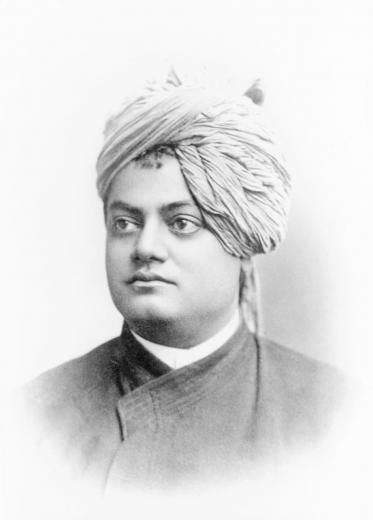

Swami Vivekananda
1863-1902
"Talk to yourself once in a day, otherwise you may miss meeting an intelligent person in
this
world."

One of the most well-known spiritual leaders, Swami Vivekananda was a prodigious thinker, a master
orator,
and a fierce patriot. He is a well-known individual who is credited with introducing Hinduism to the West.
In Chicago, around 1983, he represented Hinduism in the Parliament of Religions, which just not made him
popular but an impactful personality and undoubtedly the greatest figure at the Parliament.
He was born into an aristocratic Bengali family on 12 January 1863, in Kolkata (earlier Calcutta) and was
originally named Narendra Dutt. Swami Vivekananda, a social reformer and spiritual guide, established the
Ramakrishna Mission on May 1, 1897, with the intention of bringing about both personal salvation and a
better world. Instead of emphasising particular people, he always concentrates on teaching universal
concepts. His mind was astounding. His speeches, books, letters, poems, and thoughts inspired young people
all across the world in addition to those in India.
He spread the notion that "the divine, the absolute, exists within all human beings regardless of social
status" and that "seeing the divine as the essence of others will promote love and social harmony".
Vivekananda saw truth, purity, and unselfishness as qualities that bolstered the intellect and connected
morality to mental power. He counselled his followers to practise shraddha (faith), to be holy, and to be
selfless. Brahmacharya was advocated by him, and he saw it as the basis of his eloquence and mental and
physical fortitude.
Education
In 1871, at the age of eight, Narendranath enrolled at Ishwar Chandra Vidyasagar's Metropolitan Institution, where
he went to school until his family moved to Raipur in 1877.[30] In 1879, after his family's return to Calcutta, he
was the only student to receive first-division marks in the Presidency College entrance examination. [31] He was an
avid reader in a wide range of subjects, including philosophy, religion, history, social science, art and
literature.[32] He was also interested in Hindu scriptures, including the Vedas, the Upanishads, the Bhagavad Gita,
the Ramayana, the Mahabharata and the Puranas. Narendra was trained in Indian classical music,[33] and regularly
participated in physical exercise, sports and organised activities. Narendra studied Western logic, Western
philosophy and European history at the General Assembly's Institution (now known as the Scottish Church
College).[34] In 1881, he passed the Fine Arts examination, and completed a Bachelor of Arts degree in 1884.[35][36]
Narendra studied the works of David Hume, Immanuel Kant, Johann Gottlieb Fichte, Baruch Spinoza, Georg W. F. Hegel,
Arthur Schopenhauer, Auguste Comte, John Stuart Mill and Charles Darwin.[37][38] He became fascinated with the
evolutionism of Herbert Spencer and corresponded with him,[39][40] translating Herbert Spencer's book Education
(1861) into Bengali.[41] While studying Western philosophers, he also learned Sanskrit scriptures and Bengali
literature.[38]
William Hastie (principal of Christian College, Calcutta; from where Narendra graduated) wrote, "Narendra is really
a genius. I have travelled far and wide but I have never come across a lad of his talents and possibilities, even in
German universities, among philosophical students. He is bound to make his mark in life".[42]
Narendra was known for his prodigious memory and the ability at speed reading. Several incidents have been given as
examples. In a talk, he once quoted verbatim, two or three pages from Pickwick Papers. Another incident that is
given is his argument with a Swedish national where he gave reference to some details on Swedish history that the
Swede originally disagreed with but later conceded. In another incident with Dr. Paul Deussen's at Kiel in Germany,
Vivekananda was going over some poetical work and did not reply when the professor spoke to him. Later, he
apologised to Dr. Deussen explaining that he was too absorbed in reading and hence did not hear him. The professor
was not satisfied with this explanation, but Vivekananda quoted and interpreted verses from the text, leaving the
professor dumbfounded about his feat of memory. Once, he requested some books written by Sir John Lubbock from a
library and returned them the very next day, claiming that he had read them. The librarian refused to believe him,
until cross-examination about the contents convinced him that Vivekananda was indeed being truthful.[43]
Some accounts have called Narendra a shrutidhara (a person with a prodigious memory).[44]
Initial spiritual forays
In 1880, Narendra joined Keshab Chandra Sen's Nava Vidhan, which was established by Sen after meeting Ramakrishna
and reconverting from Christianity to Hinduism.[45] Narendra became a member of a Freemasonry lodge "at some point
before 1884"[46] and of the Sadharan Brahmo Samaj in his twenties, a breakaway faction of the Brahmo Samaj led by
Keshab Chandra Sen and Debendranath Tagore.[45][34][47][48] From 1881 to 1884, he was also active in Sen's Band of
Hope, which tried to discourage youths from smoking and drinking.[45]
It was in this cultic[49] milieu that Narendra became acquainted with Western esotericism.[50] His initial beliefs
were shaped by Brahmo concepts, which denounced polytheism and caste restrictions,[29][51] and a "streamlined,
rationalized, monotheistic theology strongly coloured by a selective and modernistic reading of the Upanisads and of
the Vedanta."[52] Rammohan Roy, the founder of the Brahmo Samaj who was strongly influenced by unitarianism, strove
towards a universalistic interpretation of Hinduism.[52] His ideas were "altered [...] considerably" by Debendranath
Tagore, who had a romantic approach to the development of these new doctrines, and questioned central Hindu beliefs
like reincarnation and karma, and rejected the authority of the Vedas.[53] Tagore also brought this "neo-Hinduism"
closer in line with western esotericism, a development which was furthered by Sen.[54] Sen was influenced by
transcendentalism, an American philosophical-religious movement strongly connected with unitarianism, which
emphasised personal religious experience over mere reasoning and theology.[55] Sen strived to "an accessible,
non-renunciatory, everyman type of spirituality", introducing "lay systems of spiritual practice" which can be
regarded as an influence to the teachings Vivekananda later popularised in the west.[56]
Not satisfied with his knowledge of philosophy, Narendra came to "the question which marked the real beginning of
his intellectual quest for God."[47] He asked several prominent Calcutta residents if they had come "face to face
with God", but none of their answers satisfied him.[57][36] At this time, Narendra met Debendranath Tagore (the
leader of Brahmo Samaj) and asked if he had seen God. Instead of answering his question, Tagore said, "My boy, you
have the Yogi's eyes."[47][41] According to Banhatti, it was Ramakrishna who really answered Narendra's question, by
saying "Yes, I see Him as I see you, only in an infinitely intenser sense."[47] According to De Michelis,
Vivekananda was more influenced by the Brahmo Samaj's and its new ideas, than by Ramakrishna.[56] Swami Medhananda
agrees that the Brahmo Samaj was a formative influence,[58] but that "it was Narendra's momentous encounter with
Ramakrishna that changed the course of his life by turning him away from Brahmoism."[59] According to De Michelis,
it was Sen's influence which brought Vivekananda fully into contact with western esotericism, and it was also via
Sen that he met Ramakrishna.[60]